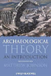
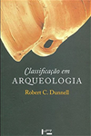
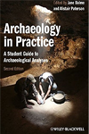
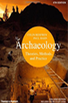

Atualizado em 01/07/2017
Por Mr.Beu
Descobrindo o Passado
Archaeological Theory: An Introduction
Sinópse:
Assim como o livro de Trigger, ele também faz uma apanhado das principais correntes teóricas da arqueologia. Muitos arqueólogos e estudantes preferem ler este livro ao invés da obra de Trigger, pois a leitura é mais leve e menos cansativa, sendo ótimo como leitura didática. A desvantagem em relação ao livro de Trigger fica por conta da ausência de uma tradução do livro para a língua portuguesa. Existe uma versão traduzida para o espanhol, o que pode ser mais fácil de ler para algumas pessoas.
Classificação em Arqueologia
Sinópse:
O livro originalmente intitulado “Systematics in Prehistory” trata daquilo que é o mais essencial para muitas ciências: classificação! O autor faz questão de organizar o pensamento sobre arqueologia e ciência de uma forma realmente sistemática, oferecendo discussões e definições bem construídas de ciência e arqueologia, teoria, método, técnica, etc. Apesar de ter sido publicado em 1971, o livro não está nada ultrapassado! Mesmo que muitos arqueólogos e estudantes possam vir a discordar das definições e ideias do autor, e o livro ainda faz esse pessoal refletir sobre aquilo que qualquer arqueólogo(a) deveria ter uma noção básica, ou até mesmo repensar muito do que já aprenderam.
Archaeology in Practice: A student guide to Archaeological Analyses
Archaeology in Practice: A student guide to Archaeological Analyses">Sinópse:
Este livro foi produzido especificamente para estudantes aprenderem sobre métodos de análise de vestígios arqueológicos.Ele trata de introduzir estudantes a alguns métodos e técnicas de pesquisa relacionados à prospecção arqueológica, representações rupestres, estratigrafia e sedimentos, datação, artefatos líticos, artefato cerâmicos, artefatos ósseos, artefatos históricos, microrresíduos presentes em artefatos, vestígios de animais, vestígios de plantas, etc.
Archaeology: Theories, Methods, and Practice
Sinópse:
Certamente um “clássico” para aprender sobre teoria e método em arqueologia, o livro também é essencial para aprender sobre os principais métodos de prospecção e escavação arqueológica utilizado ate hoje. Com certeza um livro que a maioria dos arqueólogo possuem em sua biblioteca. O livro nunca foi traduzido para português, mas existe uma versão em espanhol que pode ser mais fácil de ler para alguns.